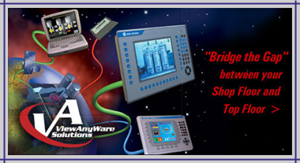

ABOUT US
We Specialize in TOTAL INTEGRATION OF THE PLANT right from SHOP FLOOR (CONTROL LEVEL) TO TOP FLOOR (OFFICE LEVEL)of the Organization involving transmission of DATA through various layers for RDBMS and Development of Customized Software Packages such as MIS and ERP etc. We also specialize in Networking of the Total Plant Control with a Centralized Man Machine Interface Package (SCADA) such as RSView32 of Rockwell Software for Accessing and Controlling Data from Different Makes of PLCs (such as SIEMENS, GE FANUC, MITSUBISHI, MODICON, OMRON etc.).
Our SOFTWARE DIVISION covers a wide range of spectrum including WEB Enabling Services, WEB Development, Full E-Commerce Solution, and Customized Software Development for ERP Applications, RDBMS and finally Technology consulting. At the moment our goal is to provide best possible solutions regarding Information Technology to companies in India & abroad. In the near future we plan to expand our services globally. We are a budding and innovative company. Customer satisfaction per excellence is our motto. We work with our clients at every step to ensure ultimate satisfaction. SOLPRO has a team of highly professional experts, who strategically analyze the business of a client, discuss & understand its requirements, advise a comprehensive plan and effectively implement the ideal solution. Our expertise lies in the back-end programming & offering integrated solutions to our customers.
We, with a rich experience of software development and implementation, have capabilities of driver development, application development, implementation and training. SOLPRO Automation Pvt. Ltd. also specialize in providing total customized MIS solution or interfacing these software packages with your existing MIS/ERP software. We are also involved in development of Customized Screens for Man Machine Interface Applications in Visual Basic at FrontEnd and Database Connectivity with MS-SQL Server / Oracle / MS-Access etc. at BackEnd.
ROCKWELL AUTOMATION PRODUCTS include Programmable Logic Controllers (PLCs), AC/DC Variable Speed Drives, Soft Starters, Sensors, Electrical Switchgears and Rockwell Software packages which include Supervisory Control and Data Acquisition (SCADA) and Electrical Design and Documentation software packages running on Windows as well as DOS platforms and are known as reputed, technically sound, successful and cost effective solutions, worldwide.
We are also the Designers and Suppliers of Electrical Control Panels (PLC Based, Electrical Switchgear Based,
MCC, PCC, APFCR/Power Capacitor Banks Panels etc.). We provide RITTAL PANELS on demand as well. We are also
involved in supply of ALSTOM Products such as POWER CAPACITORS (MPP/APP); LT INDUCTION MOTORS and INDUSTRIAL
FANS etc.